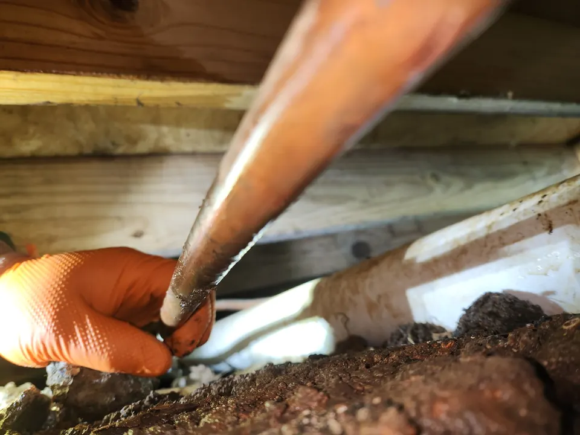

Whether you are dealing with a minor pipe leak behind a wall or a more serious break affecting your plumbing system, we provide practical solutions designed to protect your property and restore reliable water flow.
Schedule Water Pipe Repair Today!
Professional Water Pipe Repair Services
Your plumbing pipes are essential to the daily function of your home or building. When a pipe becomes damaged, it can lead to water damage, mold growth, higher utility bills, and disruption to your routine. At Angle Stop Plumbing, we offer thorough water pipe repair services to identify the issue quickly and fix it correctly.

Our pipe repair services may include:
- Water pipe leak repair
- Burst pipe repair
- Copper pipe repair
- PEX pipe repair
- Galvanized pipe repair
- Slab leak-related pipe repair
- Wall and ceiling pipe leak repair
- Corroded pipe replacement
- Water line repair
- Emergency pipe repair services
We work to diagnose the source of the problem accurately and recommend the most effective repair option for your plumbing system and budget.
Signs You May Need Water Pipe Repair
Pipe damage is not always obvious at first. Some problems start small and get worse over time. You may need professional water pipe repair services if you notice:
- Unexplained spikes in your water bill
- Low water pressure in one or more fixtures
- Water stains on walls, ceilings, or floors
- Damp spots or musty odors inside the home
- The sound of running water when no fixtures are on
- Rust-colored or discolored water
- Visible pipe corrosion
- Wet areas in the yard without a clear cause
- Cracks, pinhole leaks, or dripping pipes
Addressing these warning signs early can help reduce the risk of larger structural damage and more costly plumbing repairs.
Common Causes of Pipe Damage
There are several reasons a water pipe may fail or begin to leak. At Angle Stop Plumbing, we repair pipe problems caused by:
- Corrosion and age
- High water pressure
- Freezing and expansion
- Poor installation
- Shifting foundations or ground movement
- Joint failures
- Clogs and pressure buildup
- Normal wear and tear
No matter the cause, our goal is to provide long-lasting pipe repair solutions that restore the integrity of your plumbing system.
Our Water Pipe Repair Process
We take a careful, professional approach to every repair.

- Inspect the problem area to determine where the pipe is leaking or damaged.
- Identify the cause of the issue, such as corrosion, pressure problems, or pipe failure.
- Recommend the right solution, whether that means a targeted repair or partial pipe replacement.
- Complete the repair using quality materials and proven plumbing methods.
- Test the system to confirm proper water flow and reliable performance.
We focus on clear communication throughout the process so you know what to expect and can make informed decisions about your plumbing.
Leak Repair, Burst Pipes, and Water Line Problems
Pipe issues can range from slow leaks to sudden emergencies. Angle Stop Plumbing handles a variety of pipe-related plumbing problems, including small hidden leaks, damaged supply lines, and burst pipes that require immediate attention.
A burst or leaking water pipe can cause serious property damage in a short amount of time. Fast professional service helps limit damage, restore function, and prevent the issue from spreading to other parts of your plumbing system.
Repair or Replace? We Help You Make the Right Choice
In some cases, a damaged pipe can be repaired quickly and effectively. In other situations, replacement may be the better long-term solution, especially if the pipe is severely corroded, outdated, or failing in multiple locations.
At Angle Stop Plumbing, we provide honest recommendations based on the condition of your plumbing system, the location of the damage, and the overall cost-effectiveness of repair versus replacement. Our goal is to help you choose the option that offers the best value and reliability.
Why Choose Angle Stop Plumbing for Water Pipe Repair?
When you need a dependable plumber for water pipe repair, experience matters. Property owners choose Angle Stop Plumbing because we provide:

- Prompt response for urgent pipe issues
- Thorough diagnosis and reliable repairs
- Honest recommendations and clear communication
- Quality workmanship and trusted plumbing solutions
- Service focused on protecting your home and plumbing system
We understand how stressful pipe problems can be, and we work hard to make the repair process as smooth and efficient as possible.
Schedule Water Pipe Repair Services With Angle Stop Plumbing
If you are dealing with a leaking, damaged, or burst pipe, contact Angle Stop Plumbing for professional water pipe repair services. Our team is ready to diagnose the problem, restore your plumbing, and help protect your property from further water damage.
Trust Angle Stop Plumbing for responsive service, reliable repairs, and quality care for your home’s plumbing system.